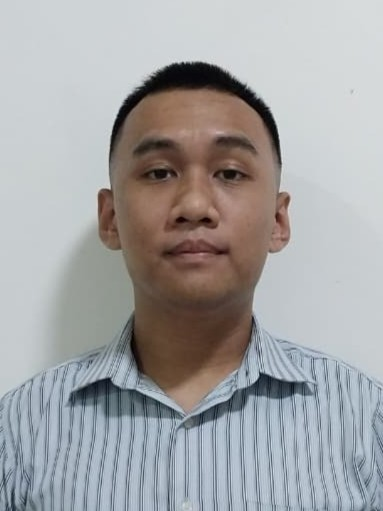

Profile
I'm Trystan Prastanov Situmorang. I'm currently a computer science
student at State University of Jakarta. I have a strong passion
for tinkering with technology and exploring new advancements in
the field. My interests include game development, IoT, and solving
practical problems through technology. I love to learn new things,
face challenges, taking risks, and improve myself.
Education
| School | Major | Graduation Year |
|---|---|---|
| SDK PENABUR Kota Wisata | General | 2016 |
| SMPK PENABUR Kota Wisata | General | 2019 |
| SMAK PENABUR Kota Wisata | Science Track | 2022 |
| State University of Jakarta | Computer Science | 2024 - Present |

Skills
-
Programming Languages and Frameworks
- Python
- Flask
- JavaScript
- Next.js
- C#
-
Tools
- Git
- Adobe Photoshop
- Unity
-
Languages
- Indonesian (Native)
- English (Fluent)
- German (Basic)
- Mandarin (Basic)
-
Soft Skills
- Problem solving
- Quick learner
Past Projects
-
GFL2 Platoon Raid Tracker Web AppA web application designed to help platoons track player performance and meta dolls during Gunsmoke Frontline, built for the game Girls Frontline 2.
-
Reminder Bot on TelegramA telegram bot that can receive commands to set reminders and send notifications at specified times. Built using Python and the python-telegram-bot library.
-
Joke Unit Conversion Desktop AppA desktop app for converting units with joke units that came from American stubbornness to use anything but metric units. Built using Python and Qt.
Awards
- 1st place at Regency level 2020 National Science Competition (KSN-K)
- Participant at Province level 2020 National Science Competition (KSN-P)
Reflection
I've noticed a pattern in how I handle side projects. On one
hand I sometimes struggle to actually finish them. Once the
initial excitement wears off, I'll either get distracted by
another new idea or even fall into full-on procrastination mode.
Other times I swing the other way, I'll overengineer a project
that I trap myself, endlessly tweaking tiny details instead of
moving on.
On the positive side, this usually comes from genuine curiosity
and a drive to dive deep into a topic, which is valuable when
learning new things. But I've also learned that projects don't
have to be perfect to be valuable. Lately I've been trying with
setting smaller goals and finishing with "good enough" version
first before polishing it. This helps me actually create usable
products while still room for improvements. It's a work in
progress, but I see it as part of growing as a person to be
someone that can ship ideas into reality.
Future Career Goals
My goal is to work on games, either solo or as a part of a small,
tight knit teams where freedom of expression comes first. I want
to make games that are not only entertaining but also thought
provoking. For me, video games aren't just products, they're a
form of art, and I want to spend my career creating pieces that
genuinely matter to people.